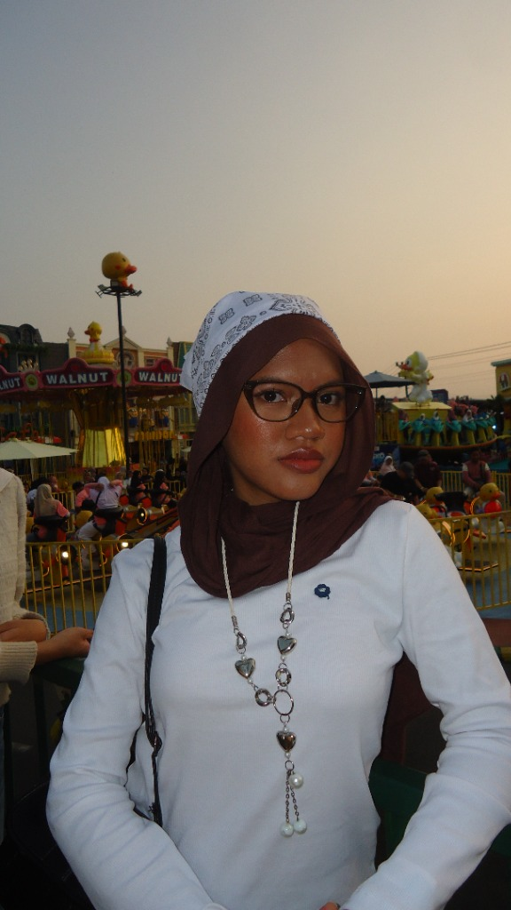

WebGIS Flores Timur
Legenda
Flores Timur
About
ABOUT
🌸
🌸
🌸
🌸
🌸
🌸
🌸
🌸
🌸
🌸
🌸
🌸

NAME
:
Agillah Azzam H. H.
PRAKTIKUM
:
PG Web
ACARA
:
Acara 6 (Leaflet)
KAJIAN
:
Flores Timur, NTT
SUMBER
:
GeoJSON Flotim
🌸
🌸
🌸
🌸
🌸
🌸
🌸
🌸
🌸
🌸
🌸
🌸
Praktikum Pemrograman Geospasial Web
Acara 6 • Pembuatan Peta Web Menggunakan Leaflet & Bootstrap
Tutup
Legenda
FLOTIM
TITIK TOPONIMI
Gunung
Bentang Alam
Tanjung
Pesisir Pantai
Teluk
Perairan Laut
Toponimi
Titik Wilayah
JUMLAH PENDUDUK
≤ 12.000 Jiwa
(Klasifikasi Rendah)
12.001 - 24.000 Jiwa
(Klasifikasi Sedang)
> 24.000 Jiwa
(Klasifikasi Tinggi)
JARINGAN JALAN
Jalan Provinsi
(Garis Merah Solid)
Jalan Kabupaten
(Putus-Putus Sedang)
Jalan Lain
(Putus-Putus Halus)
Legenda
Legenda
Titik Toponimi
Gunung
Tanjung
Teluk
Toponimi
Jumlah Penduduk
≤ 12.000 jiwa
12.001 - 24.000 jiwa
> 24.000 jiwa
Jaringan Jalan
Jalan Provinsi
Jalan Kabupaten
Jalan Lain
SKALA
1 : 100.000
10 km